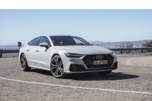
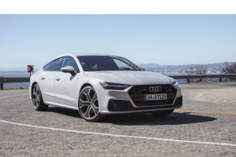

AUDI AG is de Duitse autofabrikant van het merk Audi. Het bedrijf uit Ingolstadt is sinds 1965 een onderdeel
(99,95%) van Volkswagen AG, de overige 0,05% staan genoteerd aan de Deutsche Börse. De naam is afkomstig van de
achternaam van de oprichter, August Horch, waarvan Audi de Latijnse vertaling is.
 

Artikel over het merk "Audi"